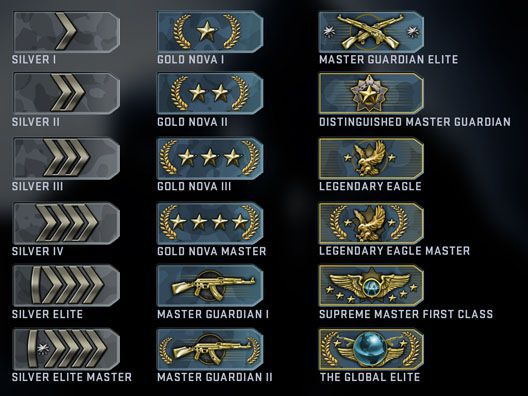

CS:GO
| Cs Go
|
|
Não é a capa do jogo
|
|
| Informações
|
| Desenvolvedor
|
Gabe Newell e Hidden Path Entertweirweinment
|
| Publicador
|
Válvula
|
| Ano
|
2012
|
| Gênero
|
Matação, violência, assassinato, mutilação, tráfego, terrorismo, tudo em primeira pessoa disponível para você!
|
| Plataformas
|
Xbox One, Microsoft Windows, Linux, Xbox 360, PlayStation 3, Nokia 3310, Mac, Nintendo Wii, Gameboy, afins
|
| Avaliação
|
83%
|
| Idade para jogar
|
Mais de 45, porque você vai ouvir muitos palavrões e cheirar muitos cigarros(referência ao Zorlak)
|
|
Counter-Strike: Global Offensive é um simulador de russos feito pela Valve. Lançado em 2012 em comemoração ao fim do mundo, é uma sequência de Counter-Strike: Source, mas que só mudou foram os gráficos e novas formas de ser sugador do dinheiro de otários: arrecadar dinheiro com as skins, que ainda são uma das piores merdas inventadas pela Valve.Se gostas de uma comunidade tóxica,cancerígena e essencialmente constituída por falhados com a maturidade de um feto o CS:GO é o ideal para ti.
Jogabilidade
O sistema de jogo é bastante simples: andar, matar, matar, matar, matar galinha, andar mais um pouco, usar uma flashbang, ofender o dono do servidor, usar uma smoke, morrer na faquinha, partir a mesa do computador, ser expulso da Lan House, e por aí vai.
Modos de jogo
- Competitivo: É o grande destaque do CS:GO. Aqui no modo competitivo, temos 2 times de 5 jogadores com o objetivo de plantar a bomba, por parte dos muçulmanos terroristas, e defusar a bomba, por parte dos contraterroristas.
- Braço-direito:Mesma coisa só que em duplas.
- Casual: O objetivo é o mesmo do competitivo, com a diferença que possuem 10 jogadores para cada um dos times e o limite de rounds é de 15. A maior diferença para o competitivo é a confusão que vira uma sala de casual, justamente por ter 20 retardados se matando o tempo inteiro.
- Deathmatch: Aqui é onde a merda confusão acontece. Apenas pegue uma arma e mate tudo o que se move e seja do time adversário. Não pense, apenas rushe o mapa inteiro com uma AK-47 na mão e saia atirando. Infelizmente, aqui as granadas estão desabilitadas, caso contrário seria, com certeza, um show de flashbangs pelo mapa inteiro.
Matchmaking e patentes
- Silver: é a patente mais baixa do jogo. Ela vai desde a Prata 1 até a Prata Elite Mestre, chamada de "Prata 5" pelos noobs. Aqui é a patente dos retardados, você vai ver de tudo, desde crianças insuportáveis que ficam gritando "QUÉ OTA" depois de dar 985732894732 tiros de AK-47, errar todos, ganhar um assist e ainda achar que matou, a supostos excelentes jogadores que dizem que "estão empacados nessa patente porque só pegam trolls e noobs", como se isso fosse desculpa para jogar mal.
- Gold Nova: popularmente conhecida como prata em potencial, essa patente vai do Ouro 1 até o Ouro 4. Vale lembrar que o Ouro 1 é chamado de "Prata 6" por agir como um retardado. Todos os ouros têm espírito de prata, pois acham que pelo fato de terem saído do prata, já são pro-players que fazem highlights em todas as partidas~,
- Guardian Master: conhecida como AK, temos as patentes AK 1, AK 2 e AK Cruzada (conhecidacomo AKX), aqui nós temos os piores tipos de jogadores. Não no quesito habilidade, porque aqui, por incrível que pareça, os jogadores começam a ter um pooooouco de racionalidade na hora de jogar, mas sim pelo fato de que são os jogadores mais tóxicos de todo o CS. Não podem perder uma partida que insultam toda a tua família.Vêem-se na obrigação de ganhar e fazem de tudo para não perderem, recorrendo ao alto uso de hacks.
- Distinguished Guardian Master:o famoso "xerife". Aqui é um meio termo, ainda temos os imbecis das patentes anteriores, alguns que recém saíram do AK e se acham os melhores, alguns hacks e, por outro lado, alguns players que realmente estão começando a jogar bem e entender a ideia do jogo. É nessa patente que os meninos são separados dos homens, pois quem é menino descepara AK e fica eternamente lá, e quem é homem sobe para Global;
- Legendary Eagle:são chamados de Águia 1 e Águia 2. As Águias são uma evolução da patente anterior: hackers, jogadores relativamente bons, alguns que desceram de Supremo que jogam para caralho, outros que nem sabem como diabos chegaram ali... Normalmente, muitos jogadores empancam nessa patente e começam a smurfar, por não aguentarem o fardo de jogar contra Global, Supremo, etc;
- Supreme Master Firs Class:denominada apenas como "supremo", é, juntamente com os AKs, a classe onde mais exitem hacks em todo o CS. Aqui é um caos, pois temos os desesperados que querem chegar logo no Global e não aguentam ver todo dia a patente de supremo no seu perfil. Fazem de tudo para chegarem a Global. Batem na mãe, no cachorro, passam 26 horas e meia por dia em frente ao computador,esquecem-se que têm uma vida para além deste jogo, entre outros;
- The Global Elite: Aqui se concentram a grande maioria dos pro players do CS. É a patente mais almejada por todos os jogadores do Counter Strike. Diferente do caos que é a patente de supremo, esta é mais tranquila, pois a grande maioria dos globais são pessoas que percebem do joguinho, têm aim (pontaria) e tem noção de jogo.
